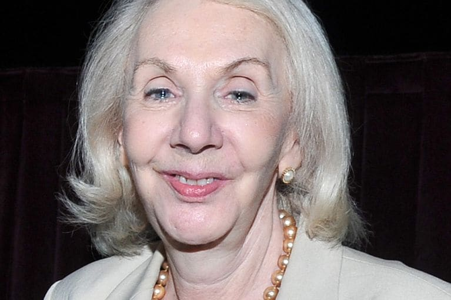

This article is plagarized from this article
Mental health
Undoubtedly, social networking plays a vital role in broadening teen social connections and helping them learn valuable technical skills. But what impact is all of this social networking having on young teen minds? Most reports indicate that the impact can be significant.
Not only are teens' developing brains vulnerable to so much time online, but because they often have difficulty self-regulating their screen time, their risks can increase. Additionally, they are more susceptible to peer pressure, cyberbullying and sexting—all activities involving digital communication—making navigating the online social world treacherous at times.
All in all, there are a number of health issues that develop as a result of too much time online. Here is an overview of the most common mental health-related issues teens can experience from too much social media use.
Depression and anxiety
Depression
Researchers are just beginning to establish a link between depression and social media. While they have not actually discovered a cause and effect relationship between social media and depression, they have discovered that social media use can be associated with an intensification of the symptoms of depression, including a decrease in social activity and an increase in loneliness.
For instance, a study published in Computers in Human Behavior found that the use of multiple social media sites is more strongly associated with depression than the amount of time spent online. According to the study, people who used more than seven social media platforms had more than three times the risk of depression than people who used two or fewer sites.
What's more, several additional studies have shown that the prolonged use of social media may be related to the signs and symptoms of depression as well as low self-esteem, especially in children.
Anxiety
Teens often feel emotionally invested in their social media accounts. Not only do they feel pressure to respond quickly online, but they also feel pressure to have perfect photos and well-written posts, all of which can cause a great deal of anxiety. In fact, some studies have found that the larger a teen's social circle online the more anxiety they feel about keeping up with everything online.
It takes a lot of time and effort to keep up with the unspoken rules and culture of each social media platform. As a result, this puts additional pressure on teens, which can cause feelings of anxiety.
Additionally, if teens commit a faux pas online, this also can be an extreme source of anxiety. Many teens, especially girls, are prone to worry about what others might think of them and how they will respond when they see them next. Then factor in cyberbullying, slut-shaming, and other mean online behaviors and you can see why social media is a very real source of anxiety for many teens.
BOOMERS ARE SENSITIVE
Boomers are overreacting. Social media is not a problem. These boomers r so mad that they couldn't experience such platforms in their childhoods a few centuries ago. Ok boomer!
